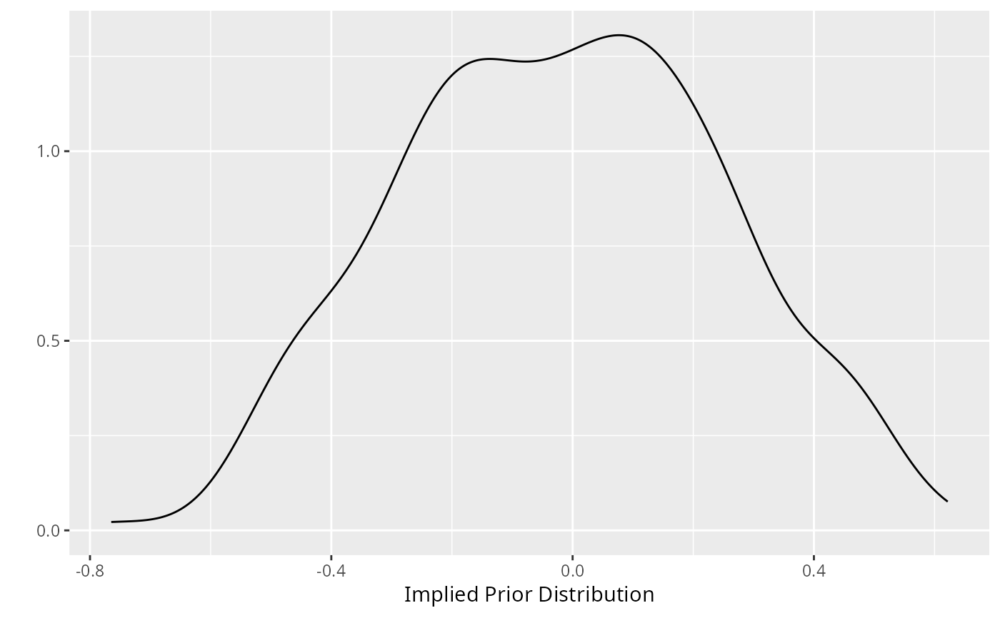

Visualize the implied prior distribution for the partial correlations. This is
particularly useful for the Bayesian hypothesis testing methods.
Usage
plot_prior(prior_sd = 0.5, iter = 5000)
Arguments
- prior_sd
Scale of the prior distribution, approximately the standard deviation
of a beta distribution (defaults to 0.5).
- iter
Number of iterations (prior samples; defaults to 5000).
Examples
# note: iter = 250 for demonstrative purposes
plot_prior(prior_sd = 0.25, iter = 250)
#> Warning: `qplot()` was deprecated in ggplot2 3.4.0.
#> ℹ The deprecated feature was likely used in the BGGM package.
#> Please report the issue at <https://github.com/rast-lab/BGGM/issues>.
